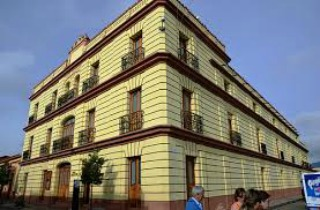
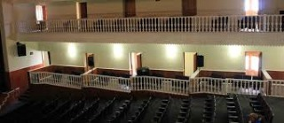
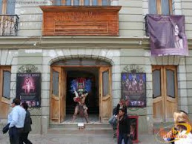
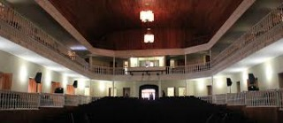
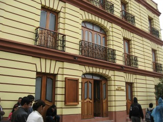

El 16 de junio de 1927, don Daniel Zebadúa Cruz compró al sr. Rafael Piccone el edificio que pertenecía a la industria eléctrica Las Casas y que fue mas tade cine principal; don Daniel Zebadúa derribó el edificio para iniciar la construcción del teatro Las Casas, conocido actualmente como teatro Zebadúa,
Se encuentra ubicada en la avenida miguel hidalgo a un costado de la biblioteca pública.
Si usted se encuentra ubicado en la plaza de la paz viendo de frente hacia la catedral puede caminar hacia su derecha pasando por la plaza 31 de Marzo como referencia encontrará el Banco Santander y Frente a este la Farmacia Similar entre estos dos lugares encontrará el andador eclesiástico, camine tres cuadras sobre el andador hasta encontrarse de frente con el arco del carmen y a su izquierda verá la biblioteca camine hacia la biblioteca y pasando esta verá la sala de bellas artes.
En el lugar usted puede realizar actividades como:
* Fotografía
* Visita a lugares históricos
* Visita a centros culturales
* Visita a teatros
* Asistencia a congresos y seminarios
* Asistencia a eventos científicos
* asistencia a eventos culturales
* Asistencia a festivales de cine
* Asistencia a festivales de música
* Asistencia a festivales de rock
* Asistencia a festivales folklóricos
* Asistencia a festivales de ópera y ballet










posicione el mouse sobre las imágenes